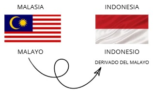
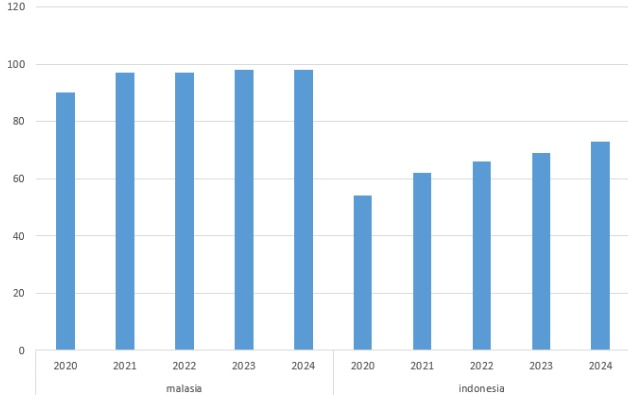
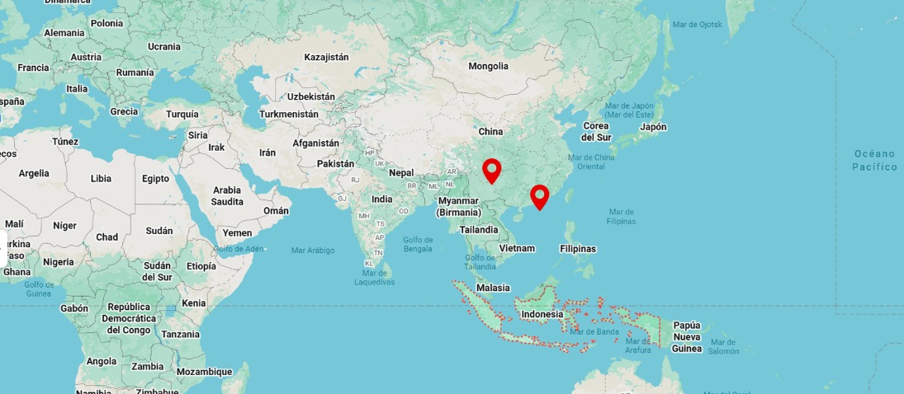
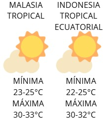
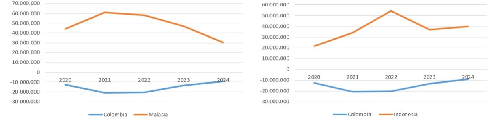
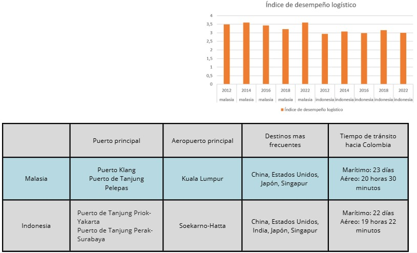
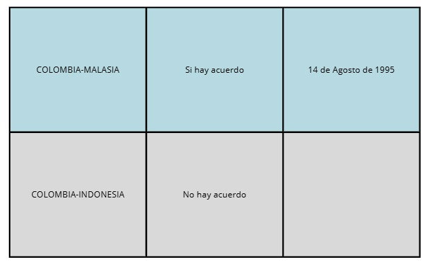
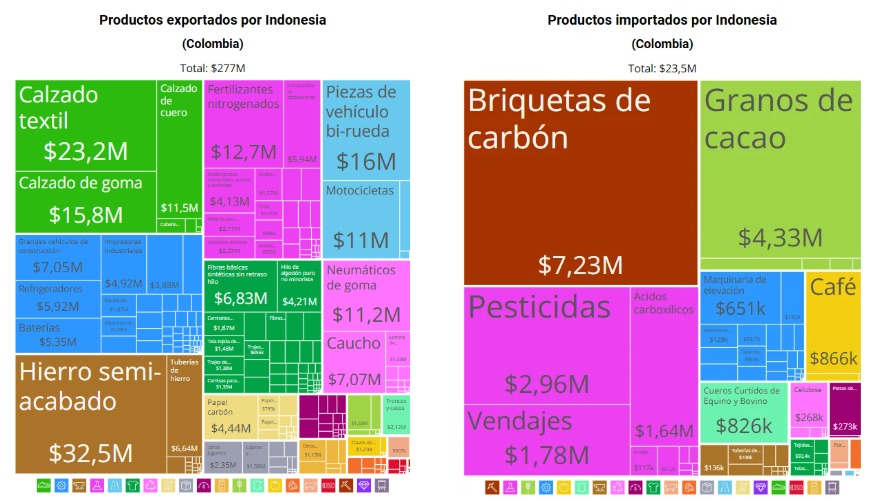
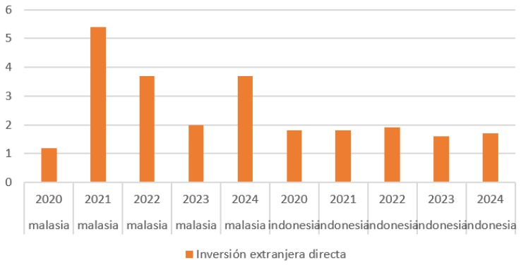
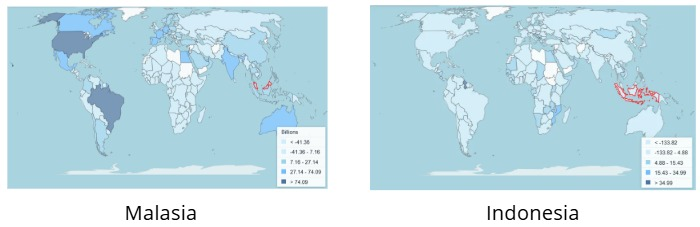

Indonesia y Malasia presentan una fuerte influencia del islam en su cultura y comportamiento social. Indonesia tiene una población musulmana del 87,1%, mientras que en Malasia el islam suní representa el 63,5%, acompañado de mayor diversidad religiosa como budismo y cristianismo. La religión influye directamente en hábitos de consumo, normas sociales y decisiones comerciales, especialmente en temas relacionados con servicios financieros y seguros.
Para ASOCAVAL, comprender estas creencias es fundamental para adaptar la comunicación y generar confianza en el mercado. En ambos países, el respeto por normas culturales y religiosas puede facilitar relaciones comerciales y aceptación de los servicios. Sin embargo, Indonesia exige mayor adaptación debido a su homogeneidad religiosa, mientras Malasia ofrece un entorno más diverso y flexible.
Malasia:★★★★★Indonesia:★★★★☆
Idioma

Crecimiento poblacional
Entorno Político y Legal
R
Idioma
Crecimiento poblacional
Entorno Tecnológico y Geoambiental
Usuarios de internet y conectividad digital

Ubicación

Clima

Entorno de Comercio Internacional
Evolución de la balanza comercial entre Colombia y los países seleccionados

El indicador de balanza comercial muestra la diferencia entre exportaciones e importaciones entre Colombia y los países analizados, permitiendo evaluar el nivel de intercambio comercial y oportunidades de mercado. Según la gráfica, tanto con Malasia como con Indonesia existe una dinámica comercial creciente entre 2020 y 2022, aunque posteriormente se observa una desaceleración, especialmente con Malasia. Indonesia mantiene un comportamiento más estable hacia 2024, lo que evidencia una relación comercial más sólida y sostenible. Para ASOCAVAL, este entorno es relevante porque refleja oportunidades para exportar cacao y derivados hacia mercados asiáticos con demanda creciente de productos agrícolas y sostenibles. Además, una balanza comercial activa facilita alianzas, acceso a compradores internacionales y expansión comercial. Sin embargo, la disminución posterior a 2022 evidencia riesgos asociados a cambios económicos y competencia internacional.
Malasia:Indonesia:
Indicador de desempeño logístico

Acuerdos comerciales

Entorno de inversión Extranjera
Flujos de inversión

El indicador de flujos de inversión muestra que Indonesia y Malasia son socios clave para mover negocios y productos a nivel mundial. En el gráfico de Indonesia, se nota una relación comercial fuerte donde el cacao ya es el segundo producto que más nos compran ($4,33M), lo que nos da la seguridad de que ya conocen y confían en nuestro grano. Por otro lado, Malasia invierte mucho en tecnología para procesar alimentos, buscando siempre materia prima de alta calidad. Para ASOCAVAL, esto es una oportunidad de oro: aprovechamos que ellos ya están metiendo dinero en sus propias fábricas para venderles nuestro cacao certificado. Mientras Indonesia nos ofrece más movimiento y rutas de transporte claras, Malasia es un mercado más exclusivo. Ambos países nos abren las puertas para crecer fuera de Colombia y conectar nuestro trabajo con compradores que valoran el buen cacao.
Malasia:★★★★☆Indonesia:★★★★★
Inversión extranjera directa

El indicador de Inversión Extranjera Directa (IED) muestra cuánta plata y confianza reciben Malasia e Indonesia del exterior. Según la gráfica, Malasia lidera con inversiones más altas y constantes, especialmente en 2021 y 2024, demostrando ser un mercado muy firme para los negocios. Indonesia, aunque es más estable y sin tantos saltos, sigue siendo un destino muy seguro. Para ASOCAVAL, este buen clima económico es clave, ya que significa que ambos países cuentan con recursos y mejores condiciones para comprar nuestro cacao. Aprovechar que estas economías están creciendo y mejorando su infraestructura nos facilita entrar con nuestro grano certificado y asegurar ventas con clientes que tienen buen respaldo financiero. Al final, Malasia ofrece un entorno más dinámico, mientras que Indonesia aporta estabilidad para nuestra expansión.
Malasia:★★★★★Indonesia:★★★★☆
Sectores receptores de inversión

El indicador de Inversión Extranjera Directa (IED) muestra la capacidad de un país para atraer capital internacional hacia sectores productivos estratégicos. Según la gráfica, Indonesia presenta una mayor recepción de inversión extranjera que Malasia, lo que refleja un mercado más atractivo por su tamaño, políticas de incentivo y apertura comercial. Esto impacta positivamente al país al fortalecer infraestructura, innovación y competitividad empresarial. Para ASOCAVAL, este entorno puede favorecer su proceso de internacionalización al facilitar alianzas comerciales, acceso a nuevos mercados y oportunidades de inversión en la cadena del cacao. Sin embargo, también implica enfrentar mayor competencia en un mercado dinámico. En el caso de Malasia, aunque recibe inversión, su escala parece menor. En conjunto, Indonesia representa una oportunidad más favorable para la expansión internacional de la empresa.